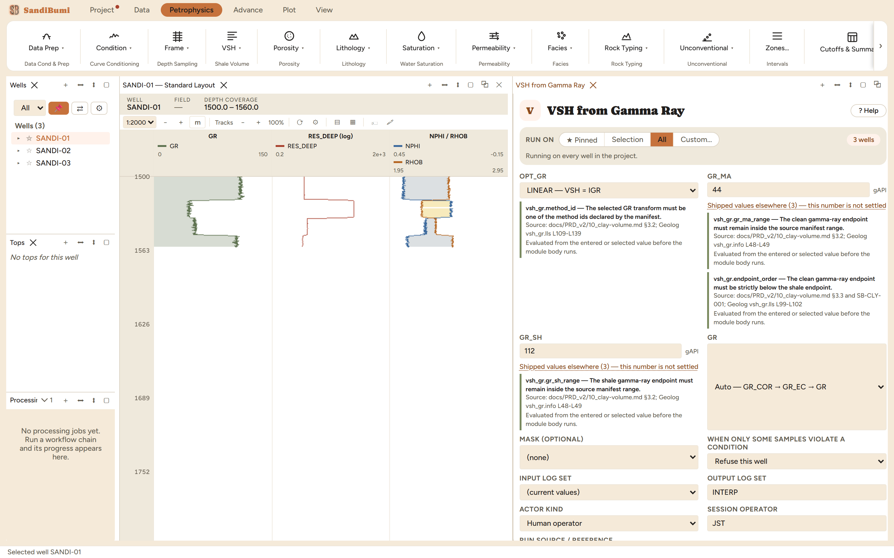
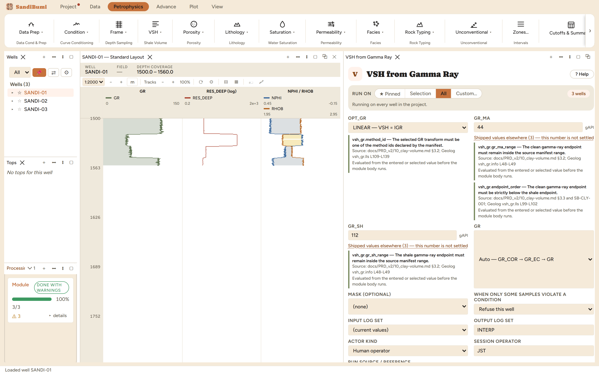

Shale volume from the gamma ray, the first interpretation step of nearly
every study. A gamma-ray index is taken between a clean-sand endpoint and a
shale endpoint, then optionally passed through a published transform. It is
the default VSH because the input is the one log every well has, and its
failure modes are all visible: both endpoints show on a histogram, and the
index is linear between them.
The physics
The index is IGR = (GR − GR_MA) / (GR_SH − GR_MA). LINEAR takes VSH = IGR;
the Stieber, Larionov and Clavier options bend the line downward through the
mid-range, encoding the observation that in younger rocks radioactivity rises
faster than clay volume. Two details matter:
The transforms are concave, so they only ever read at or below the
linear index. Choosing one is a statement about the rock (Larionov's
Tertiary curve is for young, unconsolidated sections), never a dial for
making VSH smaller.
The _NORM forms are the exact normalized expressions, for the
Tertiary curve (23.7·IGR − 1) / (23.7 − 1), which
reach exactly 1 at IGR = 1. The textbook decimal forms (0.083, 0.33) are
rounded and miss the boundary by up to half a percent; both are offered so
a study matching legacy work can reproduce it, but the exact form is the
default recommendation.
The picks and why
GR_MA 44, GR_SH 112 gAPI: the P5/P95 of SANDI-01's gamma-ray
histogram (43.5 / 111.8, rounded). Percentile endpoints from the well's
own distribution are the standard first pick; on a multi-well study,
normalize first (Condition book) and pick one pair for the field.
LINEAR: the honest default until the geology argues for a
transform.
Step by step
Open a histogram of GR and read the clean and shale modes.
Open Petrophysics ▸ VSH ▸ VSH from Gamma Ray and enter the
endpoints, citing where they came from in the custody line.
Pick the form, and press Run VSH from Gamma Ray.

Two endpoints and a form. The pane's source note records where
the endpoints came from.
Reading the result
The run reports 0 clean · 3 degraded, and decoding that verdict is
the chapter's most useful lesson: degraded here means clamped and
counted, not broken. Per well, 72, 75 and 83 samples (230 in all)
computed an index outside [0, 1] and were clamped into range for the limited
VSH output, which is exactly what P5/P95 endpoints promise, since by
construction about a tenth of the distribution lies outside them. The
unlimited companion curve VSH_GR keeps the raw values, so nothing is
hidden:
SELECT COUNT(*) FILTER (WHERE value < 0 OR value > 1)
FROM computed_curves WHERE curve_name = 'VSH_GR' AND NOT isnan(value)
Run live: median VSH 0.5415 on the LINEAR form. Switching to the
exact Larionov Tertiary form (LARINOV2_NORM) on the same endpoints drops the
median to 0.2509, less than half, while the outside-range count
stays exactly 230, because the transform maps [0, 1] onto [0, 1] and clamping
happens on the index. The transform is that consequential, which is why it is
a geological argument and not a preference.

Degraded, decoded: every well had tail samples clamped into
[0, 1], each one counted in the per-well report.
QC and pitfalls
Overlay VSH on the GR track and check the two ends: known clean sand
should read near zero, massive shale near one. An endpoint picked inside
a washout or a hot sand skews everything between.
A halved median from a transform switch is not an error, but it must
be defensible from the rock, and the custody line should say why the form
was chosen.
On multiple vintages, endpoints picked per well hide calibration
differences that normalization would expose. Normalize first, then one
pair for the field.